If it's concrete, we do it.
Residential and commercial, from a single driveway apron to a slab for a metal building. Same crew, same standard.
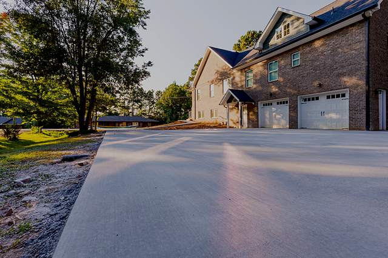
New driveways
Tear out the old one, prep the base properly, and pour a driveway that will outlast the house payment.
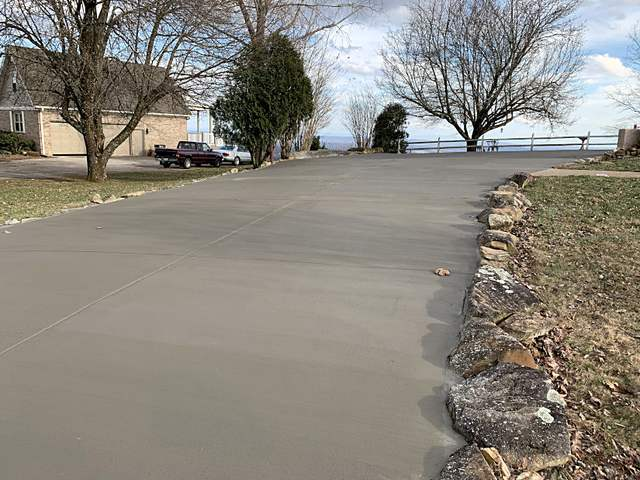
Extensions & widening
Room for another car, a turnaround, or guests who currently park on your grass. Matched and tied into what's there.
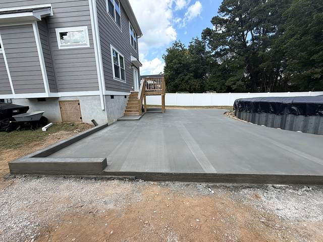
Patios & sidewalks
Outdoor living space that drains the right way and doesn't crack along the first cold snap.
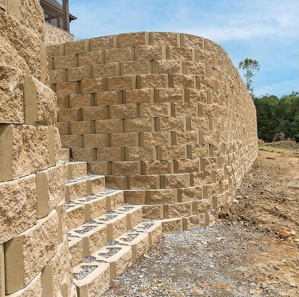
Retaining walls
Block and poured concrete. Engineered to hold the hill, not just to look like it's holding the hill.
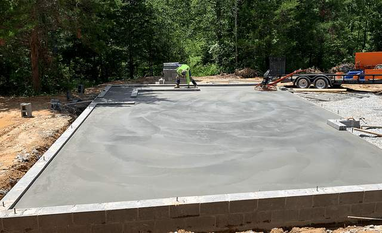
Foundations & slabs
Footings, stem walls and slabs — including foundations sized and set for metal buildings.
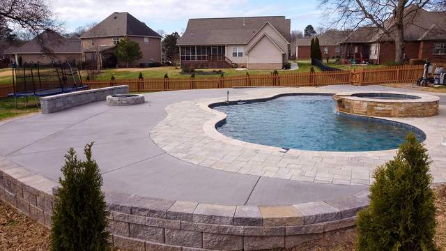
Pool decks
New decks and resurfacing, with the border and finish you actually wanted instead of whatever was cheapest.
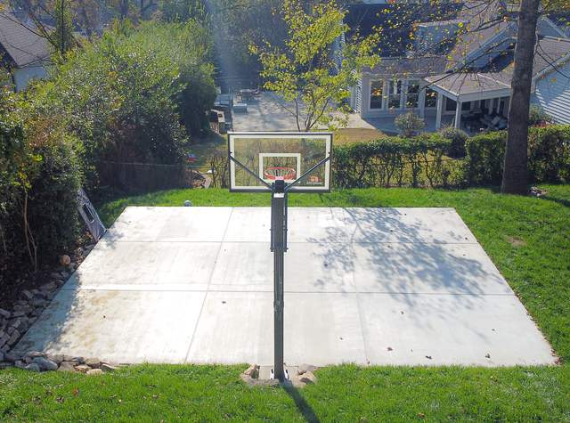
Courts
Basketball, pickleball and shuffleboard. Flat, true, and jointed so the ball bounces where it should.
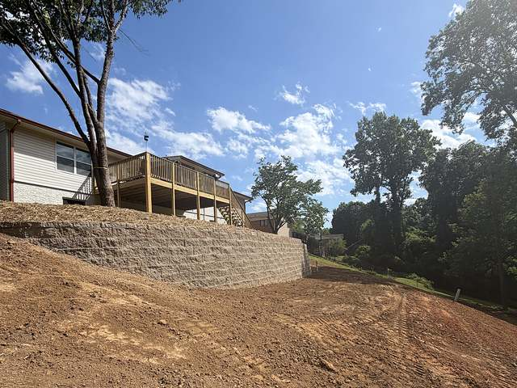
Excavating & dirt work
Land clearing, grading and lawn levelling, French drains, concrete demolition and haul-off.
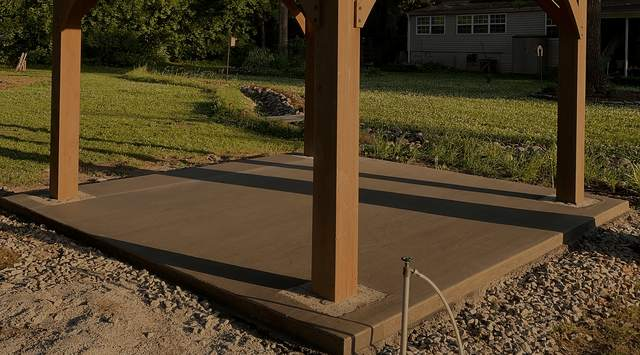
Additions & structures
ADUs, garages, pool houses, barndominiums, mother-in-law suites and custom metal buildings.
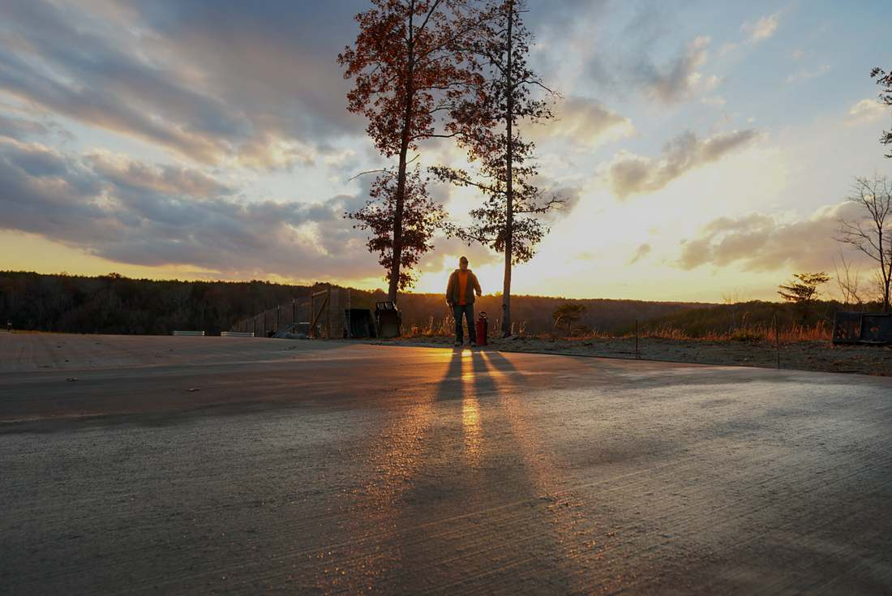
We finish when we said we would.
"We pride ourselves on doing what we say we will do when we say we will do it. Chattanooga Concrete Co. will complete your project for the price we quoted you on your scheduled day. No hidden fees or late arrivals."
Decorative & repair
Not everything needs a full tear-out. Sometimes it needs a stamp, a stain, or a seal.
- Stamped concrete
- Concrete staining
- Driveway sealing
- Driveway aprons & pavers
- Driveway repair
- Pool deck resurfacing
- Concrete walls
- Wet basement repair
- Parking lot striping
- Commercial driveway widening
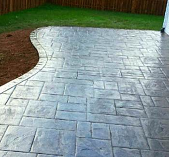
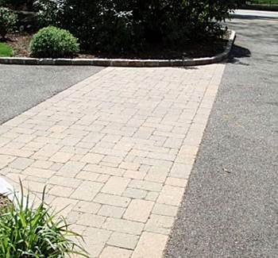
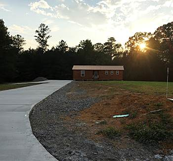
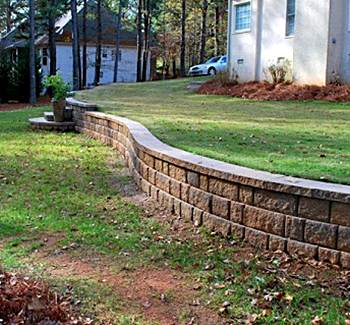
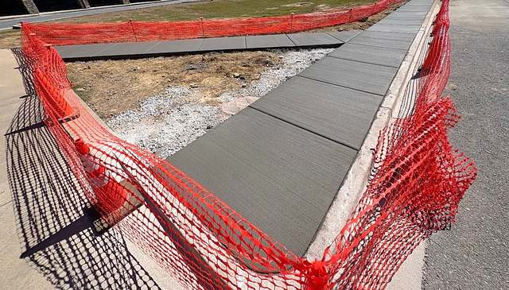
Bigger pours, same crew
Sidewalks, parking areas, loading aprons, striping and commercial driveway widening — scheduled around your business, barricaded properly, and cleaned up behind us.
4.8 stars from 100 Google reviews
Drainage was a big issue before we had the retaining wall constructed. These guys are very knowledgeable and came out to inspect and gave us a lot of good solid information to think over. We could not be more happy with its look and performance. Chattanooga Concrete Co. did a quality job, they were clean, and they were prompt. — Pattie S.
We always wanted a place in our back yard to be able to grill and enjoy a small lawn. Living in North Chattanooga, our incline was just too steep to make it practical. Thankfully, Chattanooga Concrete Co.'s retaining wall helped transform our unusable land into the perfect area for grilling and relaxing. — Jayne N.
This company is sensational! My husband and I had to have our concrete patio remodeled and they did an outstanding job at removing the old broken pieces and putting in a brand new area in a short amount of time. — Heidi Marie Wallace
Tell us what you're pouring.
Free phone consultation. We'll walk the job, price it properly, and give you a date we can actually keep.
Chattanooga Concrete Co.
Chattanooga: 522 Lytle St, Chattanooga, TN 37405
Dalton: 801 E Walnut Ave A106, Dalton, GA 30721
Phone: (423) 708-2372
Hours: Mon–Sat 9:00 AM – 5:00 PM · Closed Sunday
Serving: Chattanooga, Hixson, Soddy Daisy, East Brainerd, Brainerd, Ooltewah, Apison, Harrison, Middle Valley, Signal Mountain, Lookout Mountain, Elder Mountain, Lookout Valley, Cleveland, Charleston and Dalton, GA.